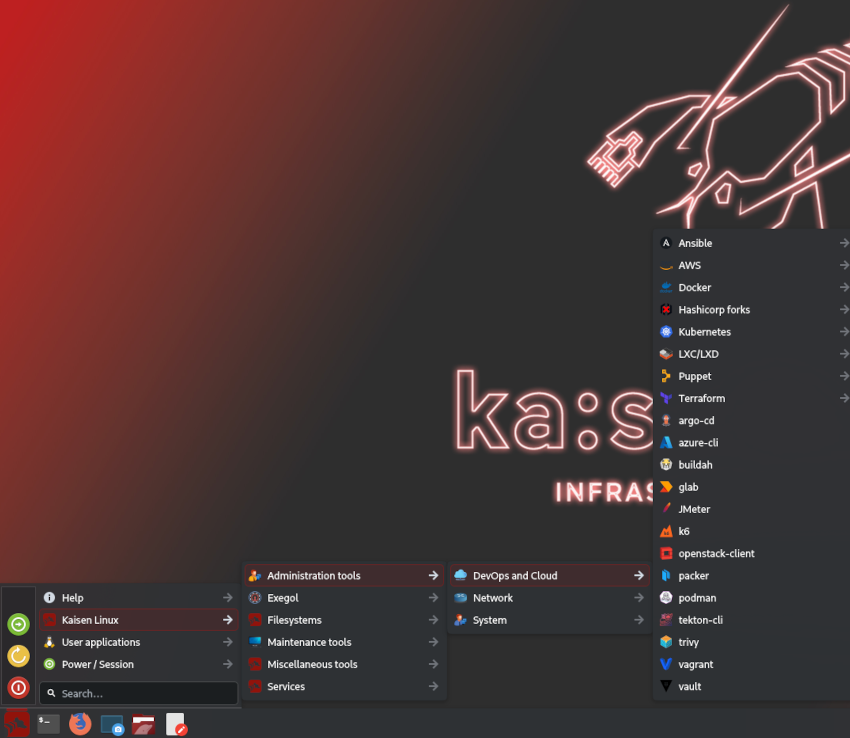

Kaisen Linux | Manpages
This documentation contains 727 manual pages for applications from kaisen menu sorted by category.

You can switch to sorted A-Z manpages documentation by clicking on the drodpown in the upper-left navbar.
other-links
Other Links
- Check the official Kaisen Linux website.
- Check the official Kaisen Linux documentation.
- Check Debian testing manpages for additionnal help.
contributor
Contributor
Manpages for Kaisen Linux made by Arnaud Cormier - freelance at magiklabs